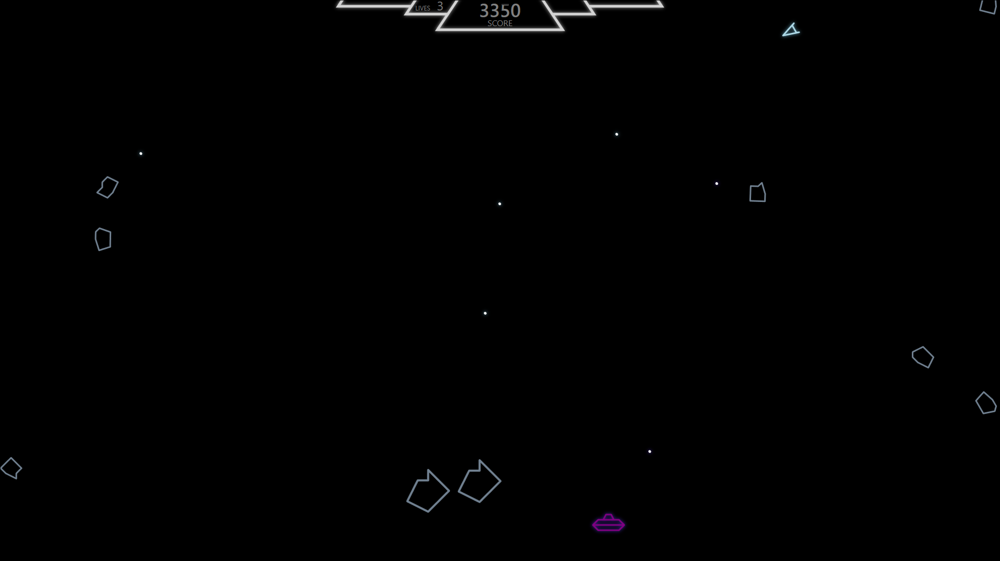
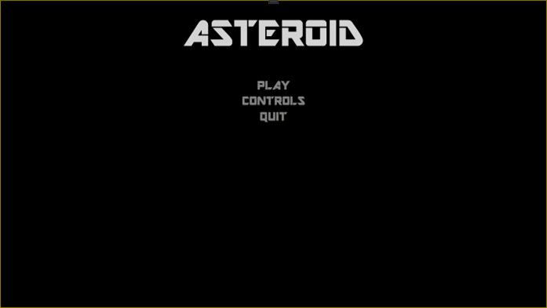
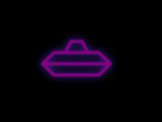

Вступление

Рисунок 1.1 - Финальный продуктДанное руководство предназначено для начинающих разработчиков видеоигр, решивших создать свой первый продукт с помощью WPF. Руководство рассчитано на тех, кто имеет базовые представления о синтаксисе языка программирования C# (или хотя бы знает основы программирования) и тех, кто знаком с видеоиграми и имеет некоторое о них представление.
Исследовательская часть
Стек используемых технологий для реализации программы:
- Windows Presentation Foundation – фундамент, построенный на:
- Язык программирования C#, на котором реализована вся логика программы;
- Язык разметки XAML для реализации пользовательского интерфейса;
- Microsoft Visual Studio – для создания и редактирования .xaml и .cs файлов.
Техники, используемые разработчиками сегодня и техники, применённые в Asteroids
Несмотря на прошедшие десятилетия, у тогдашних разработчиков видеоигр и сегодняшних кое-что общее: их главная задача – как можно дольше удержать игрока в игре, чтобы, как следствие, “выжать” из него как можно больше денег. Если раньше это достигалось повышенной сложностью видеоигр, неожиданными ситуациями и, временами нечестными по отношению к игроку, методами, то сейчас это происходит по множеству самых изощрённых схем, от концепции потока до “гачи-механик” (разновидность сбора коллекционных предметов).
Самым главным изменением с тех времён стало появление джойстика, а затем и мыши, что позволило сильно облегчить управление игровым персонажем, а с появлением большего количества кнопок у современных консолей (или, если говорить про персональные компьютеры, с учётом клавиатуры) – куда разнообразнее.
Игры прошлых поколений достаточно для современных геймеров. Раньше перед геймдизайнерами не было цели усложнить игру десятками механик, сотнями параметров и огромным пластом запутанного сюжета – чёткие цели для победы, незамысловатое (но не значит простое) управление, простая (по современным меркам) графическая составляющая – таков был рецепт тогдашней Asteroids. Её целью было набрать как можно больше очков, уничтожая астероиды и летающие тарелки, при этом, не столкнувшись с ними и попутно уклоняясь от вражеских выстрелов; управление: ускорение в сторону носа корабля, повороты, стрельба и телепорт для крайних случаев; графика – набор векторов. Тем не менее, несмотря на свою простоту, Asteroids не зря получила своё звание одной из самых популярных аркад.
Принципы разработки видеоигр
Ключевой особенностью игр с программной точки зрения – необходимость постоянно обновлять данные всего игрового пространства. Данные обновления происходят на основе имеющихся в программе данных (которые можно просчитать заранее), а также на основе пользовательского ввода, предсказать который невозможно. В связи с этим перед началом разработки необходимо позаботиться о том, что данные будут постоянно обновляться с определённой периодичностью.
Вообще же, последние несколько десятилетий для создания видеоигр в основном используются видеоигровые движки (Unity, Unreal Engine, Godot, многие другие), специально созданные для упрощения создания игр как людьми, только постигающими программирование (а игровые движки заточены в первую очередь под программистов, работу и организацию кода и взаимосвязей между его частями), так и для облегчения работы крупных компаний. Тем не менее, он не является обязательным компонентом для создания игры (хотя и очень желательным, будь то уже упомянутые Unity, Unreal и другие или какой-либо написанный самостоятельно и заточенный под конкретные задачи). При разработке видеоигры без игрового движка программисту (а при отсутствии игрового движка им приходиться особенно тяжело) приходиться просчитывать все низкоуровневые задачи и учитывать все вероятные исходы поведения программы в той или иной ситуации. Такие инструменты, как WPF, сильно облегчают программистам задачу, обрабатывая большинство таких исходов.
Конкретно WPF позволяет: работать с векторной графикой, просчитывать пересечение этих векторов, обновлять их месторасположение в “игровом мире”, отрисовывать UI (пользовательский интерфейс) – буквально за несколько строк кода; обработку остальной логики можно реализовать на C#. О из самых популярных (но далеко не единственным) приложением, позволяющее работать с WPF, является Microsoft Visual Studio, имеющее достаточные возможности для реализации подобного проекта.
Если говорить именно про реализацию “Asteroids” – игры для аркадных автоматов, выпущенной Atari в 1979 году – то передо мной не стояло цели воспроизвести её точь-в-точь. Моей целью была лишь реализация основных механик, используемая в аркаде (потому в итоговом продукте имеется несколько расхождений с игрой 1979 г.).
Об аркаде
“Asteroids” представляла собой игру, в которой игрок берёт под контроль некий звездолёт с нетривиальной системой управления, оружием для борьбы с внешними угрозами и “варпдвигателем” – устройством для мгновенного перемещения в пространстве. Его задача – уничтожить с помощью своего оружия как можно больше астероидов, отбиваясь при этом от враждебных вражеских кораблей, ведущих прицельный огонь по игроку. Говоря игровыми терминами:
- под звездолётом подразумевается небольшой игровой объект стреловидной формы, способный ускоряться по направлению своего движения, поворачивать “нос” влево-вправо, выпускать перед собой “пули” и перемещаться (телепортироваться) в случайную точку игрового пространства при активации “варпдвигателя”;
- под астероидами подразумеваются шарообразные объекты, перемещающиеся по игровому полю в случайном направлении и разделяющиеся на несколько маленьких при попадании;
- под вражескими кораблями подразумевались объекты, похожие на “летающие тарелки”, выпускающие с определённым интервалом в сторону игрока снаряды;
- сама же игра делится на раунды, от которых зависит количество появления астероидов, время между появлениями вражеских кораблей и количество получаемых игроком очков.
Также стоит отметить, что при достижении края игрового пространства, корабль игрока и астероиды перемещаются в точку, находящуюся на противоположной стороне экрана, т.е. эти два типа игровых объектов “зациклены” по осям X и Y и ограничены границами экрана.
Практическая часть
Декомпозиция продукта
Asteroids (здесь и далее под “Asteroids” я буду подразумевать итоговый продукт, созданный в ходе проектной деятельности, если не оговорено иное) можно разбить на несколько простых составляющих, а именно:
- Игровой интерфейс (кнопки, текст, лучший счёт и система жизней);
- Игровые объекты (аватар игрока, астероиды, НЛО (здесь и далее под НЛО я буду подразумевать вражеские корабли), снаряды, выпускаемые игроком и НЛО);
- Механики взаимодействия этих объектов (преимущественно, при столкновении их друг с другом).
Для реализации этих составляющих необходимо использовать файлы:
- “Main_Window.xaml”, отвечающий за взаимодействие пользователя и интерфейса;
- “Main_Window.xaml.cs”, в котором будет реализована вся основная игровая логика, а также логика взаимодействия игрока и интерфейса;
- “GameObject.cs”, являющийся родительским классом для всех игровых объектов и не содержащий почти никакой логики:
- “Asteroid.cs”, содержащий логику перемещения и распада на более мелкие “копии” астероидов;
- “PlayerShip.cs”, содержащий всю логику для корабля игрока, а именно: передвижение, стрельба, телепортация, систему добавления очков для данного корабля, уничтожение и возрождение;
- “UFO.cs”, содержащий логику для НЛО, т.е. передвижение, стрельбу и уничтожение;
- “Bullet.cs”, в котором содержится вся логика для снаряда, выпускаемого кораблём игрока и НЛО;
- “Ordnance.cs”, представляющим собой вспомогательный класс для обработки столкновений;
- “Shapes.cs”, который отвечает за отрисовку объектов (а точнее, их формы);
- “Effects.cs”, содержащий код для отрисовки различных эффектов (свечение, распад и т.д.).
- или любую другую систему распределения файлов, методов и игровой логики в целом; конкретно это система лично мне кажется наиболее логически правильной, однако я могу ошибаться…
Для реализации того “контента”, который представлен в работе, внутри этих файлов необходимо реализовать систему классов, отвечающую за:
- Запуск игры с главного меню (отрисовка интерфейса и проработка связанных с ним действий);
- Загрузка игрового пространства, где будет происходить сама игра, а также подготовка этого пространства к первому раунду (отрисовка интерфейса, спавн (появление) игровых объектов, а именно аватара игрока и астероида и т.д.);
- Механики управления звездолётом (ускорение, повороты, стрельба, телепортация, увеличение количества очков для этого корабля, уничтожение и повторное появление, неуязвимость и т.д.);
- Механики астероида (передвижение, уничтожение, распад на более мелкие астероиды и т.д.);
- Механики пули (передвижение и т.д.);
- Механики обработки столкновений (и вызова связанных с ними событий);
- Механики системы раундов (проверка на то, остались ли на поле какие-либо объекты, кроме игрока, а также генерация следующего раунда);
- Механики НЛО (передвижение, стрельба, уничтожение и т.д.);
- и прочие вспомогательные механики (отрисовка объектов на экране, отрисовка эффектов и т.д.).
Алгоритмы и процессы
Алгоритмы и процессы, использованные при проектировании и реализации проекта:
- Вышеупомянутая работа с интерфейсом через XAML, а также отрисовка игровых объектов через Polyline, реализованный через библиотеку System.Windows.Shapes;
- Обнаружение коллизии объектов, т.е. пересечение их векторов (визуального и внутри игрового представления) друг с другом;
- DispatcherTimer, реализованный через библиотеку System.Windows.Threading и отвечающий за постоянное обновление состояний объектов и регулярную проверку игровой логики;
- Система генерации псевдослучайных чисел Random, реализованная через библиотеку System и используемая при инициализации игровых объектов для добавления “элемента случайности”;
- Обработка пользовательского ввода через метод canvas_KeyDown(), отвечающий за нажатие клавиш на клавиатуре и связанную с этим обработку событий.
Все эти алгоритмы реализованы на аппаратном уровне внутри самого WPF и C#, более конкретная реализация настраивается непосредственно в самих классах, создаваемых программистом.
Процесс создания
Меню и прочий интерфейс
Весь пользовательский интерфейс можно разделить на следующие составляющие:
- Главное меню, содержащее:
- Заголовок;
- Кнопка “Начать игру”;
- Кнопка “Управление”;
- Кнопка выхода из игры;
- Меню, в котором указано управление в формате ([кнопка на клавиатуре, вызывающая действие] [действие]):
- Escape – открытие меню паузы во время игры;
- W – ускорение корабля по направлению его движения;
- A – поворот носа корабля против часовой стрелки (направо);
- D – поворот носа корабля по часовой стрелке (налево);
- S – перемещение корабля в случайное место в игровом пространстве;
- Space – выстрел из орудия;
- Кнопка для возврата в главное меню;
- Меню паузы, содержащее:
- Кнопка для возврата к игровому процессу;
- Кнопка для выхода в главное меню;
- Кнопка для выхода из игры;
- И, наконец, интерфейс, появляющийся непосредственно во время игрового процесса и содержащий:
- Счётчик очков и его обозначение;
- Счётчик жизней и его обозначение;
Предназначения вышеописанных меню:
- Главное меню необходимо для того, чтобы игрока “не выбрасывало в гущу событий” сразу после запуска игры, а также для того, чтобы он мог посмотреть управление, использующееся в игре и закрыть игру при необходимости.
- Меню “Управление” предназначено для того, чтобы игрок мог посмотреть перед игрой список кнопок, нажатия на которые будет обрабатывать программа. Здесь стоит отметить, что комбинация “WASD + Space” используется практически во всех современных играх, потому именно она и выбрана как схема управления для игры;
- Меню паузы необходимо для того, чтобы игрок мог приостановить игру в случае каких-либо неожиданных обстоятельств и затем продолжить с того же места без потери прогресса, а также чтобы вернуться в главное меню (чтобы посмотреть схему управления или же начать новую игру с первого раунда) или выйти из игры.
- Счётчики очков и жизней во время игрового процесса необходимы для того, чтобы игрок мог отслеживать эти два ключевых параметра во время игрового процесса.
Весь этот интерфейс можно реализовать через XAML файл (листинг 3.1 и рисунок 3.1) с помощью таких компонентов, как Grid, StackPanel, TextBlock (с которыми и будет взаимодействовать игрок и события с которого будут обрабатываться в коде программы (а именно события “Наведение курсора”, “Увод курсора”, “Нажатие кнопки” и “Включение/отключение [вставьте_наименование] меню”)), и, опционально, Style. Ниже приведён пример кода реализации главного меню и итоговый результат:
Листинг 3.1 – Главное меню
<Window.Resources>
<Style x:Key="Title" TargetType="TextBlock">
<Setter Property="FontFamily" Value="/Asteroid;component/Fonts/#AR DESTINE"/>
<Setter Property="FontSize" Value="144"/>
<Setter Property="TextAlignment" Value="Center"/>
<Setter Property="Foreground" Value="LightGray"/>
<Setter Property="HorizontalAlignment" Value="Center"/>
<Setter Property="VerticalAlignment" Value="Center"/>
<Setter Property="RenderTransformOrigin" Value="0.5,0.5"/>
</Style>
<Style x:Key="Button" TargetType="TextBlock">
<EventSetter Event="MouseEnter" Handler="MouseEnter"/>
<EventSetter Event="MouseLeave" Handler="MouseLeave"/>
<EventSetter Event="MouseLeftButtonDown" Handler="MouseLeftButtonDown"/>
<Setter Property="FontFamily" Value="/Asteroid;component/Fonts/#AR DESTINE"/>
<Setter Property="FontSize" Value="48"/>
<Setter Property="Foreground" Value="Gray"/>
<Setter Property="HorizontalAlignment" Value="Center"/>
</Style>
<Style x:Key="Control" TargetType="TextBlock">
</Window.Resources>
<Grid Name="MainGrid" ScrollViewer.CanContentScroll="True">
<StackPanel Name="Main_Menu" Margin="0,30,0,0" Visibility="Visible" CanVerticallyScroll="True" ScrollViewer.CanContentScroll="True" ClipToBounds="True">
<TextBlock Style="{StaticResource Title}" Text="ASTEROID"/>
<TextBlock Style="{StaticResource Button}" Name="Main_Menu_Game" MouseLeftButtonUp="Game_MouseLeftButtonUp" Text="PLAY" Margin="0,75,0,0"/>
<TextBlock Style="{StaticResource Button}" Name="Main_Menu_Controls" MouseLeftButtonUp="Controls_MouseLeftButtonUp" Text="CONTROLS" />
<TextBlock Style="{StaticResource Button}" Name="Main_Menu_Quit" MouseLeftButtonUp="Quit_MouseLeftButtonUp" Text="QUIT" />
</StackPanel>
</Grid>

Рисунок 3.1 – Главное менюЗдесь также стоит отметить, что для текста был использован шрифт AR DESTINE в формате .ttf, который был помещён в подпапку “Fonts” решения, в котором реализуется проект и к которому обращаются стили при инициализации текстовых полей интерфейса.
В коде расположены следующие методы:
- Обработка цвета текста кнопки при определённом действии (листинг 3.2)
- “MouseEnter()” – обработка наведения мыши на текст (изменение цвета текста);
- “MouseLeave()” – обработка увода мыши с текста (изменение цвета текста);
- “MouseDown()” – обработка нажатия мыши по тексту (изменение цвета текста);
- “Game_MouseUp()” – обработка нажатия кнопки “PLAY” (изменение цвета текста кнопки, отключение текущей составляющей интерфейса и начало игрового процесса) (листинг 3.3);
- “Controls_MouseUp()“ – обработка нажатия кнопки “CONTROLS” (изменение цвета текста кнопки, отключение текущей составляющей интерфейса и вывод на экран схемы управления) (листинг 3.4);
- “Quit_MouseUp()” – обработка нажатия кнопки “QUIT” (закрытие приложения) (листинг 3.5);
Листинг 3.2 – Наведение мыши на кнопку
private new void MouseEnter(object sender, MouseEventArgs e) => ((TextBlock)sender).Foreground = Brushes.LightGray;
Пояснение к листингу 3.2: единственное, что делает данный метод – изменяет цвет текста кнопки на светло-серый.
Листинг 3.3 – Переход из главного меню в игру
private void Game_MouseUp(object sender, MouseButtonEventArgs e)
{
Main_Menu_Game.Foreground = Brushes.White;
DisplayWindow(Main_Menu, false);
canvas.Visibility = Visibility.Visible;
Cursor = Cursors.None;
GameStart();
}
Пояснение листингу 3.3: Данный метод изменяет цвет текста кнопки, отключает главное меню с помощью метода DisplayWindow() (листинг 3.6), включает интерфейс для игры (прописанный в XAML файле пустой (ничего не содержащий) Canvas, отвечающий за прорисовку интерфейса во время игрового процесса и содержание которого обрабатывается в Main_Window.xaml.cs), отключает курсор и вызывает метод GameStart(), отвечающий за запуск первого раунда игры (о нём речь пойдёт ниже).
Листинг 3.4 – Переход из главного меню в меню управления
private void Controls_MouseUp(object sender, MouseButtonEventArgs e)
{
Main_Menu_Controls.Foreground = Brushes.White;
DisplayWindow(Main_Menu, false);
DisplayWindow(Controls, true);
}
Пояснение к листингу 3.4: Данный метод изменяет цвет текста кнопки, отключает главное меню и включает меню с схемой управления.
Листинг 3.5 – Выход из игры
private void Quit_MouseUp(object sender, MouseButtonEventArgs e) => Close();
Листинг 3.6 – Метод DisplayWindow()
private void DisplayWindow(StackPanel window, bool isDisplayed) => (window.IsEnabled, window.Visibility) = (isDisplayed, isDisplayed ? Visibility.Visible : Visibility.Hidden);
Пояснение к листингу 3.6: Данный метод включает/выключает конкретное окно, а также делает его видимым/невидимым.
По схожему принципу реализуются и остальные меню и необходимые для кнопок этих меню методы.
Игровые объекты
Запуск первого игрового раунда
Вышеупомянутый метод GameStart() запускает процесс подготовки игрового пространства для первого раунда, а именно:
- Инициализирует список объектов и добавляет туда корабль игрока и астероид (о этом позже);
- Отрисовывает пользовательский интерфейс в ранее упомянутом компоненте canvas в XAML файле (просто отрисовывает набор линий);
- Задаёт счётчикам жизней и очков начальные значения;
- Инициализирует таймер и запускает его.
На таймере следует остановиться подробнее. В общем понимании, игра – набор объектов, постоянно взаимодействующих друг с другом; для просчёта всех этих взаимодействий необходимо вызывать определённые методы с определённой периодичностью, что и достигается за счёт таймера. От того, насколько большой период обновления был задан таймеру, зависит количество кадров в секунду, а также скорость обновления объектов и их взаимодействия и, следовательно, скорости игры в целом. Все эти методы можно разделить на следующие подгруппы:
- Передвижение элементов – просчёт положения игровых объектов в следующем кадре игры;
- Проверка коллизий – просчёт столкновений объектов друг с другом и, если произошло столкновение, нуждающееся в обработке, непосредственно его обработка;
- Обновление счётчиков жизней и очков для корабля игрока;
- Проверка на то, “зачищен” ли раунд (не осталось ли в игровом пространстве каких-либо объектов, кроме корабля игрока), и если да, то загрузка следующего раунда;
- Проверка, следует ли “спавнить” НЛО, и его создание, если проверка прошла успешно;
- Проверка количества жизней игрока и завершение игры, если жизней не осталось.
Всё, ранее упомянутое мною в этом разделе можно реализовать так, как представлено в листинге 3.7:
Листинг 3.7 – Методы для инициализации игрового процесса и обновления состояния объектов
private void GameStart() // метод для инициализации игры
{
gameStarted = true; // обозначение того, что игра запущена
Objects = new System.Collections.Generic.List<GameObject>(); // инициализация списка объектов
SpawnObject(GameObjectTypes.Asteroid); // инициализация астероида
SpawnObject(GameObjectTypes.PlayerShip); // инициализация корабля игрока
UFOTimer = 2000; // установление интервала между появлениями НЛО (об этом позже)
double x = canvas.ActualWidth / 2;
System.Windows.Shapes.Polyline HUD = new System.Windows.Shapes.Polyline
{
Points = new PointCollection() { // отрисовка декоративной части интерфйса, отвечающей за счётчики жизней и очков
new Point(x-300,0),
new Point(x-310,15),
new Point(x-170,15),
new Point(x-160,0),
new Point(x-180,30),
new Point(x-100,30),
new Point(x-80,0),
new Point(x-120,60),
new Point(x+120,60),
new Point(x+80,0),
new Point(x+100,30),
new Point(x+180,30),
new Point(x+160,0),
new Point(x+170,15),
new Point(x+310,15),
new Point(x+300,0),
},
Stroke = Brushes.LightGray,
Fill = Brushes.Transparent,
Effect = new Effects.FX(Colors.LightGray).Glow,
StrokeThickness = 5
};
canvas.Children.Add(HUD);
Lives.Text = playerShip.Lives.ToString(); // обновление счётчика жизней
Score.Text = playerShip.Score.ToString(); // обновление счётчика очков
GameHUD.IsEnabled = true;
GameHUD.Visibility = Visibility.Visible;
timer = new System.Windows.Threading.DispatcherTimer(); // инициализирует таймер, задаёт ему начальное значение интервала, привязывает к нему метод Game_Move_Elements(), отвечающий за обновление логики в игре и запускает таймер
timer.Tick += GameTick;
timer.Interval = new TimeSpan(100000);
timer.Start();
}
private void GameTick(object sender, EventArgs e)
{
MoveElements(); // обновляет игровые объекты в соответствии с их поведением, прописанным в их классах (преимущественно передвижение этих объектов)
CollisionTest(); // проверяет наличие столкновений
Lives.Text = playerShip.Lives.ToString(); // обновление счётчика жизней
Score.Text = playerShip.Score.ToString(); // обновление счётчика очков
CheckForRoundClear(); // проверяет, завершён ли раунд
SpawnUFO(); // создаёт НЛО
if (playerShip.Lives <= 0) EndGame(); // проверяет количество жизней у игрока и при успешной проверке завершает игру
}
Класс GameObject и общие характеристики классов Asteroid, PlayerShip и UFO
В листинге 3.7 следует уделить вниманию списку Objects, который инициализируется перед началом первого раунда. Данный список в том или ином его виде реализуется во всех игровых движках (Unity, Unreal, т.д.); он содержит абсолютно все объекты, находящиеся в игровом пространстве (обычно, в нём же содержатся и объекты, отвечающие за пользовательский интерфейс, но в текущем проекте это ни к чему). Данный список можно применить для того, чтобы совершить некоторое действие со всеми объектами или же чтобы проверить наличие/отсутствие какого либо объекта/объектов. При желании, можно реализовать куда более сложную логику, однако для данного проекта этого вполне хватит. В этом проекте он используется в двух случаях: для передвижения всех объектов на их новую позицию перед отрисовкой следующего кадра, а также для проверки того, пройден ли раунд (есть ли в игровом пространстве астероиды/НЛО; если да, то раунд считается не пройденным).
Сам список Objects принимает объекты GameObject, который является родительским классом для всех игровых объектов (корабль игрока, астероиды и НЛО) и содержит все основные поля и абстрактные методы, присущие всем (или хотя бы двум из трёх типов) объектам. Пример реализации в листинге 3.8:
Листинг 3.8 – Класс GameObject
// поля
public System.Windows.Point Center { get; set; } // отвечает за визуальный центр игрового объекта, используется для отрисовки графики
public System.Windows.Point Trajectory { get; set; } // отвечает за траекторию движения объекта, используется при просчёте его передвижения для следующего кадра
public bool RemoveFromGame { get; set; } // отвечает за удаление неиспользуемых объектов (к примеру, астероид был уничтожен, после анимации его распада данная переменная переводится в значение true и удаляется при следующем “тике” таймера)
public MainWindow Parent { get; set; } // отвечает за то, на какой из экранов будет выводиться объект, используется для отрисовки на экран/стирания с экрана объекта и его эффектов
public System.Collections.Generic.List<Ordnances.Ordnance> Ordnances { get; set; } // содержит все снаряды, выпущенные данным объектом, используется при просчёте столкновений
public System.Collections.Generic.List<Effects.Effects> Effects { get; set; } // отвечает за наложенные на объект визуальные эффекты
public System.Windows.Shapes.Polyline Geometry { get; set; } // отвечает за визуальное отображение объекта
public bool IsDestroyed { get; set; } // отвечает за уничтожение, но не удаление объекта
public int PointValue { get; set; } // отвечает за количество очков, получаемых игроком при уничтожении объекта
public (double Thickness, Brush LineColor, Color GlowColor) Explosion { get; set; } // отвечает за толщину и цвет объекта при его уничтожении
public GameObject(MainWindow parent, Point center, int pointValue, List<Ordnances.Ordnance> ordnances, List<Effects.Effects> effects)
{
Parent = parent;
Center = center;
PointValue = pointValue;
Ordnances = ordnances;
Effects = effects;
}
// абстрактные классы
public void AddToDisplay(Effects.Effects effect) => Parent.canvas.Children.Add(effect.Geometry); // отвечает за отрисовку эффекта на экране
public bool RemoveFromDisplay(Effects.Effects effect) { Parent.canvas.Children.Remove(effect.Geometry); return true; }// отвечает за удаление эффекта с экрана
public void AddToDisplay(Ordnance ordnance) => Parent.canvas.Children.Add(ordnance.Geometry); // отвечает за отрисовку пули, выпущенной объектом, на экране (используется только для НЛО)
public bool RemoveFromDisplay(Ordnance ordnance) { Parent.canvas.Children.Remove(ordnance.Geometry); return true; }// отвечает за удаление эффекта с экрана
public abstract void Move(); // метод передвижения
public abstract void DestroyedTimeoutCooldown(); // метод, проверяющий, необходимо ли стирать объект из игры
public abstract void Destroy(); // метод уничтожения объекта
public System.Windows.Shapes.Polyline GenerateExplosionGeometry(int i1, int i2, (double lineThickness, Brush lineColor, Color glowColor) explosion) =>
new System.Windows.Shapes.Polyline()
{
Points = new PointCollection() {
new Point(Geometry.Points[i1].X, Geometry.Points[i1].Y),
new Point(Geometry.Points[i2].X, Geometry.Points[i2].Y)
},
Stroke = explosion.lineColor,
StrokeThickness = explosion.lineThickness,
Effect = new FX(explosion.glowColor).Glow
}; // метод, отвечающий за отрисовку конкретной линии и наложенных на неё эффектов на экране
public TranslateTransform TranslationPoints()
{
TranslateTransform translated = new TranslateTransform(OffsetX, OffsetY);
PointCollection pointCollection = new PointCollection();
foreach (Point vert in Geometry.Points)
pointCollection.Add(translated.Transform(vert));
Geometry.Points = pointCollection;
Center = translated.Transform(Center);
return translated;
} // метод, отвечающий за плавное передвижение объекта в игровом пространстве
public RotateTransform RotationPoints(double rotation)
{
RotateTransform rotated = new RotateTransform(rotation, Center.X, Center.Y);
PointCollection pointCollection = new PointCollection();
foreach (Point vert in Geometry.Points)
pointCollection.Add(rotated.Transform(vert));
Geometry.Points = pointCollection;
return rotated;
} // метод, отвечающий за поворот объекта, используется кораблём игрока и астероидами
public abstract void TeleportObject(Point teleportOffset); // вспомогательный метод, вызывающийся при достижении объектом края игрового простарнства, необходим для реализации уникальной для корабля игрока поведения
public Transform TeleportPoints(Point teleportOffset)
{
Transform teleport = new TranslateTransform(teleportOffset.X, teleportOffset.Y);
PointCollection pointCollection = new PointCollection();
foreach (Point vert in Geometry.Points)
pointCollection.Add(teleport.Transform(vert));
Geometry.Points = pointCollection;
Center = teleport.Transform(Center);
return teleport;
} // метод, отвечающий за телепортацию объекта при достижении им края игрового пространства, используется кораблём игрока и астероидами
public int GetPointValue() => PointValue; // метод получения очков, которые должны зачисляться при его уничтожении
Все объекты, представляющие собой один из трёх классов, наследуют от родительского класса GameObject – Asteroid, PlayerShip и UFO – реализуют абстрактные классы определённым образом:
- методы AddToDisplay() и RemoveFromDisplay(), реализующие вывод заранее обработанной информации об пуле, выпущенной объектом, или эффекте этого объекта на экран;
- абстрактный метод Move(), реализующий для всех трёх классов обработку их следующей позиции в игровом пространстве, обработку эффектов, привязанных к объекту, а также проверка на необходимость удаления объекта из игры;
- абстрактный метод TeleportPoints(), реализующий перемещение объекта при достижении им края игрового пространства противоположного края (включая обработку всех необходимых данных), использующийся в классах Asteroid и SpaceShip;
- абстрактный метод Destroy(), реализующий обработку попадания в объект и последующее его поведение (создание эффекта распада геометрии у всех трёх объектов, создание более мелких копий у астероида и возрождение у корабля игрока);
- метод GenerateExplosionGeometry(), реализующий просчёт отдельной векторной линии при уничтожении объекта для дальнейшего вывода на экран;
- метод GetPointValue(), возвращающий количество очков за уничтожение данного объекта.
Перед тем, как разбираться в особенностях каждого из этих трёх классов, необходимо обговорить один момент; все эти три класса используют несколько вспомогательных методов для вывода графики и различных эффектов на экран, сгруппированных в два файла классов: Shapes.cs и Effects.cs.
Файлы Shapes и Effects
Файл Shapes реализует внутри себя два класса:
- класс Draw, отвечающий исключительно за начальные значения векторов, отрисовывающих геометрию объекта;
- класс Shapes, отвечающий за форму игровых объектов, а именно возвращающий определённую коллекцию точек, определяющую эту форму (листинг 3.9):
Листинг 3.9 – Класс Shapes
public PointCollection Points { get; set; }
public Shapes(Point center, bool isPlayerSpaceship)
{
double x = center.X;
double y = center.Y;
if (isPlayerSpaceship)
Points = new PointCollection()
{
new Point(x-10,y+10),
new Point(x,y-20),
new Point(x+10,y+10),
new Point(x+8,y+5),
new Point(x-8,y+5),
new Point(x-10,y+10)
}; // векторная фигура, построенная по данным точкам, похожа на наконечник стрелы (данные точки используются для отрисовки корабля игрока) (рисунок 3.2)
else
Points = new PointCollection()
{
new Point(x+30,y),
new Point(x-30,y),
new Point(x-20,y+10),
new Point(x+20,y+10),
new Point(x+30,y),
new Point(x+20,y-10),
new Point(x-10,y-10),
new Point(x-5,y-20),
new Point(x+5,y-20),
new Point(x+10,y-10),
new Point(x-20,y-10),
new Point(x-30,y)
}; // векторная фигура, построенная по данным точкам, похожа на летающую тарелку (данные точки используются для отрисовки НЛО) (рисунок 3.3)
}
Рисунок 3.2 – Корабль игрока

Рисунок 3.3 - НЛОСхожим образом строиться геометрия для астероидов (по три на каждый из трёх типов).
Файл Effects реализует следующие классы:
- Родительский класс Effect, содержащий внутри себя все основные для его дочерних классов поля и логику (листинг 3.10);
- Дочерний класс ExplodeEffect, реализующий “эффект разлёта отдельных векторов, из которых состоял объект” (листинг 3.11);
- Класс FX, реализующий свечение контура объекта (листинг 3.12).
Листинг 3.10 – Класс Effects
public Shape Geometry { get; set; }
public int Lifetime { get; set; }
public Effects(int lifetime) => Lifetime = lifetime;
public Effects(Polyline geometry, int lifetime)
{
Geometry = geometry;
Lifetime = lifetime;
}
public Effects(Point firstPoint, Point secondPoint, int lifetime, Color color) =>
Geometry = new Polyline
{
Points = new PointCollection() { firstPoint, secondPoint },
Stroke = Brushes.White,
StrokeThickness = 3,
Effect = new FX(color).Glow,
};
public abstract bool Display();
Листинг 3.11 – Класс ExplodeEffect
public double Speed { get; set; }
public double OffsetX { get; set; }
public double OffsetY { get; set; }
public ExplodeEffect(Point center, Point trajectory, int lifetime, double speed, Polyline line) : base(line, lifetime)
{
Speed = speed;
OffsetX = (trajectory.X - center.X) * Speed;
OffsetY = (trajectory.Y - center.Y) * Speed;
}
public override bool Display() // данный метод обрабатывает непосредственно разлёт векторов в стороны от их изначального расположения (их исчезновение, как и удаление самого объекта, реализуется в коде самого объекта)
{
if (Lifetime <= 0)
return false;
var translation = new TranslateTransform(OffsetX, OffsetY);
Polyline polyline = (Polyline)Geometry;
PointCollection pointCollection = new PointCollection();
foreach (Point vert in polyline.Points)
pointCollection.Add(translation.Transform(vert));
polyline.Points = pointCollection;
Geometry = polyline;
Lifetime--;
return true;
}
Листинг 3.12 – Класс FX
public System.Windows.Media.Effects.DropShadowEffect Glow { get; set; }
public FX(Color color) =>
Glow = new System.Windows.Media.Effects.DropShadowEffect()
{
Color = color,
ShadowDepth = 0,
Direction = 0,
BlurRadius = 10
};
Теперь, когда вопрос с графикой был обговорён, можно вернуться к особенностям каждого из игровых объектов.
Особенности класса Asteroid
Отличительной чертой астероида является наличие у него “дочерних” версий – уменьшенных копий, на которые распадается изначальный астероид при своём уничтожении. Друг от друга эти копии отличаются уменьшенным размером и разным количеством очков, которые получает игрок при их уничтожении. Кроме этого, все астероиды имеют одинаковые характеристики и шаблон поведения, а именно:
- Астероиды делятся по размеру на три вариации: большую (20 очков), среднюю (50 очков) и маленькую (100 очков); за исключением получаемых за их уничтожение очков и их размера, они идентичны (методы Asteroid() (листинг 3.13)и Move() (листинг 3.15));
- При загрузке нового раунда в случайных точках игрового пространства появляется астероиды, количество которых численно равно текущему раунду (метод CheckForRoundClear() и SpawnObject() (листинг 3.14) в классе MainWindow);
- При появлении, астероид начинает с произвольной скоростью (ограниченной максимальным и минимальным значениями) двигаться в произвольном направлении без смены траектории движения по причине отсутствия внешних воздействиях, слегка вращаясь (метод Move());
- При достижении края игровой области астероид переносится на противоположную сторону игрового поля с сохранением направления движения (метод TeleportObject() (листинг 3.15));
- При попадании в астероид снаряда игрока, первый распадается на 2-4 меньшие свои версии (маленький астероид просто уничтожается), которые начинают вести себя согласно пунктам 3. и 4. (методы Destroy() (листинг 3.15)).
Листинг 3.13 – Конструктор класса Asteroid
public Asteroid(MainWindow parent, int pointValue, int thickness, Point center, string size, int type, int randomSeed) : base(parent, center, pointValue, new System.Collections.Generic.List<Ordnances.Ordnance>(), new System.Collections.Generic.List<Effects.Effects>())
{
Geometry = new Shapes.Draw(Brushes.SlateGray, Brushes.Black, thickness).Lines;
Geometry.Points = new Shapes.Shapes(Center, null, size + type).Points;
Size = size;
Thickness = thickness;
Explosion = (.5, Brushes.LightBlue, Colors.LightBlue);
Seed = new System.Random(randomSeed);
Point trajectory = new Point(Center.X + 1, Center.Y - 1);
trajectory = new RotateTransform(Seed.Next(360), Center.X, Center.Y).Transform(trajectory);
OffsetX = (trajectory.X - Center.X) * Seed.Next(4, 10) / 5;
OffsetY = (trajectory.Y - Center.Y) * Seed.Next(4, 10) / 5;
Rotation = Seed.Next(-1, 2) / Seed.Next(1, 5);
}
Листинг 3.14 – Методы CheckForRoundClear() и SpawnObject()класса MainWindow
private void CheckForRoundClear()
{
if (Objects.TrueForAll(x => !(x is Objects.Asteroid) && !(x is UFO)))
{
...
for (int i = 0; i < gameRound; i++)
SpawnObject(GameObjectTypes.Asteroid);
}
}
private void SpawnObject(GameObjectTypes gameObjectType)
{
GameObject spawnedObject;
switch (gameObjectType)
{
...
case GameObjectTypes.Asteroid:
default:
spawnedObject = new Objects.Asteroid(this, 20, 5, new Point(seed.Next(0, (int)canvas.ActualWidth), seed.Next(0, (int)canvas.ActualHeight)), "Large", seed.Next(0, 3), seed.Next());
break;
}
Objects.Add(spawnedObject);
canvas.Children.Add(spawnedObject.Geometry);
}
Листинг 3.15 – Методы Move(), TeleportObject() и Destroy()
public override void Move()
{
if(!IsDestroyed)
{
RotationPoints(Rotation);
TranslationPoints();
}
Effects.RemoveAll(effect => { return !effect.Display() && RemoveFromDisplay(effect); });
DestroyedTimeoutCooldown();
}
public override void TeleportObject(Point teleportOffset) => TeleportPoints(teleportOffset);
public override void Destroy()
{
IsDestroyed = true;
for(int i = 0; i < Geometry.Points.Count - 1; i++)
{
System.Windows.Shapes.Polyline segment = GenerateExplosionGeometry(i, i + 1, Explosion);
Effects.Effects line = new ExplodeEffect(new Point(Center.X, Center.Y), Geometry.Points[i], 15 + i, .01, segment);
Effects.Add(line);
AddToDisplay(line);
}
Geometry.Visibility = Visibility.Hidden;
DestroyedTimer = 200;
Seed = new System.Random();
if (Size != "Small")
for (int i = Seed.Next(0, 2); i < 4; i++)
{
int type = Seed.Next(0, 3);
Asteroid asteroid = new Asteroid(Parent, Size == "Large" ? 50 : 100, Thickness - 1, new Point(Center.X + 20, Center.Y - 20), Size == "Large" ? "Medium" : "Small", type, type == 0 ? Seed.Next() : type == 1 ? Seed.Next(48000) * Seed.Next(48000) : Seed.Next(2000000000) / Seed.Next(1, 2000000000));
Parent.Objects.Add(asteroid);
Parent.canvas.Children.Add(asteroid.Geometry);
}
}
Особенности класса UFO
В отличие от астероидов, НЛО и корабль игрока способны выпускать снаряды, летящие в определённом направлении с определённой скоростью (причём скорость снарядов игрока на порядок выше скорости снарядов НЛО) до тех пор, пока не достигнут края игрового поля (или пока не истечёт их время жизни). Сами снаряды, выпускаемые кораблями, основаны на родительском классе Ordnance, реализующем основные для выпускаемого снаряда поля и абстрактные классы (листинг 3.16).
Листинг 3.16 – Классы Ordnance и Bullet
public abstract class Ordnance
{
public Point Center { get; set; }
public Point Trajectory { get; set; }
public System.Windows.Shapes.Polyline Geometry { get; set; }
public System.Windows.Media.Color OrdnanceColor { get; set; }
public int Lifetime { get; set; }
public int GridSquare { get; set; }
public Ordnance(Point center, Point trajectory, int lifetime, System.Windows.Media.Color color)
{
Center = center;
Trajectory = trajectory;
Lifetime = lifetime;
OrdnanceColor = color;
}
public abstract bool UsesPointCollision();
public abstract bool Move();
public abstract Point CollisionPoint();
}
public class Bullet : Ordnance
{
public double Speed { get; set; }
public double OffsetX { get; set; }
public double OffsetY { get; set; }
public bool AsteroidCollision { get; set; }
public bool PlayerShipCollision { get; set; }
public bool SaucerCollision { get; set; }
public Bullet(Color color, Point center, Point trajectory, double speed, int lifetime = 200) : base(center, trajectory, lifetime, color)
{
Speed = speed;
Geometry = GenerateGeometry(color, center);
OffsetX = (Trajectory.X - Center.X) * Speed;
OffsetY = (Trajectory.Y - Center.Y) * Speed;
}
private System.Windows.Shapes.Polyline GenerateGeometry(Color color, Point center)
{
return new System.Windows.Shapes.Polyline
{
Effect = new Effects.FX(color).Glow,
Stroke = Brushes.White,
Fill = Brushes.White,
StrokeThickness = 5,
StrokeEndLineCap = PenLineCap.Round,
StrokeStartLineCap = PenLineCap.Round,
StrokeLineJoin = PenLineJoin.Round,
Points = new PointCollection()
{
new Point(Center.X, Center.Y),
new Point(Center.X - .5, Center.Y - .5),
}
};
}
public override bool UsesPointCollision() => true;
public override bool Move()
{
if (Lifetime <= 0)
return false;
TranslateTransform translation = new TranslateTransform(OffsetX, OffsetY);
PointCollection pointCollection = new PointCollection();
foreach (Point vert in Geometry.Points)
pointCollection.Add(translation.Transform(vert));
Geometry.Points = pointCollection;
Lifetime--;
return true;
}
public override Point CollisionPoint() => Geometry.Points[0];
}
В самом классе UFO кроме уже рассмотренных методов Move(), Destroy() и других хочется выделить метод Fire(), через который непосредственно производится инициализация снаряда и задание ему необходимой траектории (листинг 3.17).
Листинг 3.17 – Метод Fire()
private void Fire()
{
if (FireCooldown <= 0) CanFire = true;
if (!IsDestroyed && CanFire)
{
Ordnance ordnance = new Bullet(Colors.MediumPurple, new Point(Center.X, Center.Y + 10), new Point(Enemy.Center.X, Enemy.Center.Y), .01);
Ordnances.Add(ordnance);
AddToDisplay(ordnance);
CanFire = false;
FireCooldown = 60;
}
}
Особенности класса PlayerShip
Корабль игрока – единственный игровой объект, над которым игрок имеет контроль. Более того, корабль – единственная сущность, которая способна менять вектор своего движения после инициализации. Для реализации этого были созданы методы Thrust() и Rotate(), изменяющие данные, содержащиеся внутри класса, на основе пользовательского ввода, а также метод TranslateShip(), применяющий изменённые данные к игровому объекту (листинг 3.18).
Листинг 3.18 – Методы Thrust(), Rotate() и TranslateShip()
public void Thrust()
{
if (!IsDestroyed && IsApplyingThrust)
{
OffsetX += Trajectory.X - Center.X;
OffsetY += Trajectory.Y - Center.Y;
}
}
public void Rotate()
{
if (!IsDestroyed && IsRotating != null)
{
var rotation = RotationPoints(IsRotating == true ? -5 : 5);
Trajectory = rotation.Transform(Trajectory);
ThrustStart = rotation.Transform(ThrustStart);
ThrustEnd = rotation.Transform(ThrustEnd);
}
}
private void TranslateShip()
{
if (OffsetX < .01 && OffsetX > -.01) OffsetX = 0;
if (OffsetY < .01 && OffsetY > -.01) OffsetY = 0;
if (!IsDestroyed)
{
var translation = TranslationPoints();
Trajectory = translation.Transform(Trajectory);
ThrustStart = translation.Transform(ThrustStart);
ThrustEnd = translation.Transform(ThrustEnd);
if (OffsetX > 5) OffsetX = 5.0;
if (OffsetX < -5) OffsetX = -5.0;
if (OffsetY > 5) OffsetY = 5.0;
if (OffsetY < -5) OffsetY = -5.0;
}
if (OffsetX != 0 && !IsApplyingThrust)
OffsetX += OffsetX > 0 ? -.0005 : .0005;
if (OffsetY != 0 && !IsApplyingThrust)
OffsetY += OffsetY > 0 ? -.0005 : .0005;
}
Ещё одной отличительной особенностью корабля игрока является возможность в практически любой момент времени мгновенно переместиться в случайную точку игрового поля, реализующаяся через метод Warp() (листинг 3.19).
Листинг 3.19 - Метод Warp()
public void Warp()
{
if (WarpCooldown <= 0) CanWarp = true;
if(!IsDestroyed && CanWarp)
{
int seed = new System.Random().Next();
System.Random r = new System.Random(seed);
double x = r.Next((int)Parent.ActualWidth);
double y = r.Next((int)Parent.ActualHeight);
TeleportObject(new Point(x, y));
CanWarp = false;
CanReappear = true;
WarpCooldown = 200;
}
}
Последней, но не по значимости, является возможность корабля возродиться в центре игрового поля через некоторое время после его уничтожения при условии, что у игрока в запасе ещё остались запасные жизни. Также, при повторном появлении, на корабль накладывается временная неуязвимость к любым повреждениям; делается это для того, чтобы дать игроку более честный игровой опыт (например, когда при появлении игрока он оказывается в центре астероида). Эти игровые механики реализованы через метод Respawn() (листинг 3.20).
Листинг 3.20 – Метод Respawn()
public void Respawn()
{
if(Lives > 0)
{
Health = MaxHealth;
Lives--;
OffsetX = 0;
OffsetY = 0;
Speed = 0;
IsApplyingThrust = false;
CanWarp = true;
IsDestroyed = false;
Center = RespawnLocation;
Trajectory = new Point(Center.X, Center.Y - .1);
ThrustStart = new Point(Center.X - 5, Center.Y + 10);
ThrustEnd = new Point(Center.X + 5, Center.Y + 10);
Geometry.Points = new Shapes.Shapes(Center, true).Points;
Geometry.Visibility = Visibility.Visible;
IsInvincible = true;
InvincibilityTimer = 200;
}
}
Прочие методы
Теперь, когда нами были разобраны все три типа игровых объекта, а также обработка пользовательского ввода на стороне корабля игрока, можно проговорить:
- реализацию метода SpawnObject() в классе MainWindow, отвечающего за инициализацию всех игровых объектов и присвоения им начальных значений (листинг 3.21);
- пример реализации обработки пользовательского ввода на стороне самого окна, в котором происходит сам игровой процесс (листинг 3.22);
- реализацию проверки столкновений игровых объектов друг с другом (листинг 3.23).
Листинг 3.21 – Метод SpawnObject()
private void SpawnObject(GameObjectTypes gameObjectType)
{
GameObject spawnedObject;
switch (gameObjectType)
{
case GameObjectTypes.PlayerShip:
spawnedObject = new PlayerShip(this, 3, gameRound, playerLives, playerHealth, new Point(canvas.ActualWidth / 2, canvas.ActualHeight / 2));
playerShip = (PlayerShip)spawnedObject;
break;
case GameObjectTypes.UFO:
spawnedObject = new UFO(this, 3, 500, new Point(canvas.ActualWidth, new Random(seed.Next()).Next(20, (int)canvas.ActualHeight - 50)), 20, playerShip);
break;
case GameObjectTypes.Asteroid:
default:
spawnedObject = new Objects.Asteroid(this, 20, 5, new Point(seed.Next(0, (int)canvas.ActualWidth), seed.Next(0, (int)canvas.ActualHeight)), "Large", seed.Next(0, 3), seed.Next());
break;
}
Objects.Add(spawnedObject);
canvas.Children.Add(spawnedObject.Geometry);
}
Листинг 3.22 – Методы canvas_KeyDown() и canvas_KeyUp()
private void canvas_KeyDown(object sender, KeyEventArgs e)
{
if(gameStarted)
{
if (e.Key == Key.W) playerShip.IsApplyingThrust = true;
if (e.Key == Key.A) playerShip.IsRotating = true;
if (e.Key == Key.D) playerShip.IsRotating = false;
}
}
private void canvas_KeyUp(object sender, KeyEventArgs e)
{
if (gameStarted)
{
switch (e.Key)
{
case Key.W:
playerShip.IsApplyingThrust = false;
playerShip.Speed = 0;
break;
case Key.A:
case Key.D:
playerShip.IsRotating = null;
break;
case Key.Space:
playerShip.Fire();
break;
case Key.S:
playerShip.Warp();
break;
case Key.Escape:
timer.Stop();
Pause_Menu.IsEnabled = true;
Pause_Menu.Visibility = Visibility.Visible;
Cursor = Cursors.Cross;
canvas.Visibility = Visibility.Hidden;
break;
}
}
}
Листинг 3.23 – Методы проверки пересечения коллизий
private bool FindCollisionWithDetails(GameObject gameObject, System.Windows.Shapes.Shape shape)
{
IntersectionDetail collides = gameObject.Geometry.RenderedGeometry.FillContainsWithDetail(shape.RenderedGeometry, 2, ToleranceType.Relative);
return collides != IntersectionDetail.Empty && collides != IntersectionDetail.NotCalculated;
}
private bool FindCollision(GameObject gameObject, Ordnances.Ordnance ordnance) => gameObject.Geometry.RenderedGeometry.FillContains(ordnance.CollisionPoint()) || FindCollisionWithDetails(gameObject, ordnance.Geometry);
private void CollisionTest()
{
var objectsCopy = new System.Collections.Generic.List<GameObject>(Objects);
foreach (GameObject gameObject in objectsCopy)
if (!(gameObject is PlayerShip))
{
Rect boundingBox = gameObject.Geometry.RenderedGeometry.Bounds;
boundingBox.Inflate(10, 10);
bool skipPlayerHitTest = false;
foreach (Ordnances.Ordnance playerOrdnance in playerShip.Ordnances)
if (!gameObject.IsDestroyed && playerOrdnance.UsesPointCollision() && FindCollision(gameObject, playerOrdnance))
{
skipPlayerHitTest = true;
gameObject.Destroy();
playerShip.AddPoints(gameObject.GetPointValue());
playerOrdnance.Lifetime = 0;
}
if (!skipPlayerHitTest && !playerShip.IsInvincible && !playerShip.IsDestroyed)
{
foreach (Ordnances.Ordnance enemyOrdnance in gameObject.Ordnances)
if (enemyOrdnance.UsesPointCollision() && FindCollision(playerShip, enemyOrdnance))
{
playerShip.Destroy();
enemyOrdnance.Lifetime = 0;
}
if (!playerShip.IsDestroyed && !gameObject.IsDestroyed && boundingBox.IntersectsWith(playerShip.Geometry.RenderedGeometry.Bounds) && FindCollisionWithDetails(gameObject, playerShip.Geometry))
playerShip.Destroy();
}
}
}
Заключение
По итогу работы была создана игра “по мотивам” Asteroids с реализацией основных геймплейных моментов оригинала. Тем не менее, над проектом ещё можно поработать, а именно:
- добавить аудиоэффекты;
- улучшить графическую составляющую;
- внедрить новые типы врагов;
- усложнить алгоритм поведения летающих тарелок;
- продумать прогрессию игрока через уровни;
- сделать систему лучшего счёта с его сохранением между игровыми сессиями;
- реализовать локальный мультиплеер;
- реализовать различные типы вооружения;
- продумать систему временных бонусов с особыми эффектами;
- создать систему классов для корабля игрока;
- добавить систему улучшений, работающую между сессиями;
- и прочее.
В общем и целом, надеюсь, что, основываясь на данный монолит текста, можно реализовать простую видеоигру. Да, мною был показан далеко не весь код, однако это было сделано с расчётом на то, что тот, кто будет опираться на данное руководство при написании своей игры, додумал некоторые базовые принципы сам, и, быть может, придумал бы лучшее решение для реализации некоторых аспектов.